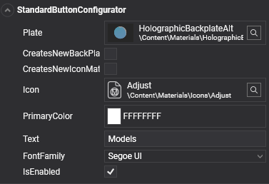
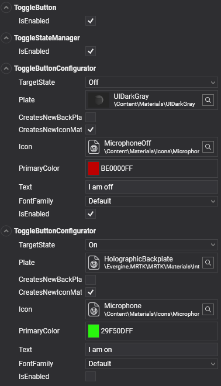
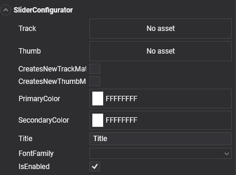

Configurators

Configurator components expose the settings you change most often on a control, such as its text, icon, and colors, in one place. Add a configurator to the root entity of a prefab instance, and it applies its values to the child entities for you. Some configurators also extend the control, for example with per-state styles for toggle buttons.
The test scenes of the MRTK demo project show every configurator in use.
Standard button configurator
StandardButtonConfigurator customizes the icon, text, and back plate of a button. By default, the materials are shared between all the buttons that use them. To change the color of one button without affecting the others, enable CreatesNewBackPlateMaterialInstance and CreatesNewIconMaterialInstance.
| Property | Default | Description |
|---|---|---|
Plate |
null |
Material of the button's back plate. |
CreatesNewBackPlateMaterialInstance |
false |
Creates a material instance for the back plate, so runtime changes do not affect other controls that share the material. |
CreatesNewIconMaterialInstance |
false |
Creates a material instance for the icon, for the same reason. |
AllowBackPlateNullMaterial |
false |
Allows a null back plate material, which hides the plate. |
AllowIconNullMaterial |
false |
Allows a null icon material, which hides the icon. |
Icon |
null |
Material of the button icon. |
PrimaryColor |
Color.White |
Tints the icon and sets the text color. |
Text |
null |
Text displayed on the button. |
TextScale |
0.006 |
Scale factor of the button text. |
Font |
null |
Font of the button text. |
The configurator is a regular component, so you can also set it from code:
using Evergine.Common.Graphics;
using Evergine.Framework;
using Evergine.MRTK.SDK.Features.UX.Components.Configurators;
public class ButtonLabel : Component
{
[BindComponent]
private StandardButtonConfigurator configurator = null;
protected override void OnActivated()
{
base.OnActivated();
this.configurator.Text = "Start";
this.configurator.PrimaryColor = Color.Yellow;
}
}
Toggle buttons
Adding a ToggleButton component to a button gives it two styles, one for the on state and one for the off state. ToggleButton adds a ToggleStateManager if the entity does not have one, and the state manager adds one ToggleButtonConfigurator per state. ToggleButtonConfigurator has the same properties as the standard button configurator, plus TargetState, which selects the state it styles.

Read or change the state with ToggleButton.IsOn, and subscribe to ToggleButton.Toggled to react when the user toggles it. To make a set of toggle buttons behave like radio buttons, add a ToggleGroup component to a common parent; only one button of the group can be on at a time.
The Buttons.wescene scene of the demo project samples shows standard and toggle buttons.
Multi-state buttons
Toggle buttons are a two-state case of a general mechanism. Every state manager derives from BaseStateManager<TState>, where TState is an enum that lists the possible states, and each configurator styles one of those states.
To create a button with more states, define an enum with the states you need, derive a state manager from BaseStateManager<TState>, and add one configurator per state. The demo project includes a three-state example, MultiStateStateManager with three MultiStateButtonConfigurator components, that you can use as a template.
Slider configurator
SliderConfigurator customizes the track, the thumb, and the labels of a slider.

| Property | Default | Description |
|---|---|---|
Track |
null |
Material of the track mesh. |
Thumb |
null |
Material of the thumb mesh. |
CreatesNewTrackMaterialInstance |
false |
Creates a material instance for the track, so runtime changes do not affect other sliders. |
CreatesNewThumbMaterialInstance |
false |
Creates a material instance for the thumb, for the same reason. |
PrimaryColor |
Color.White |
Color of the title text. |
SecondaryColor |
Color.White |
Color of the value text. |
Title |
"Title" |
Title displayed on the slider. |
Font |
null |
Font of the slider texts. |
The Sliders.wescene scene of the demo project samples shows several slider configurations.